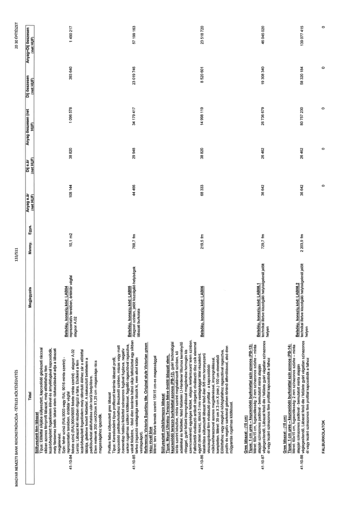

| Tétel | Megjegyzés | Menny. | Egys. | Anyag e.ár (net HUF) | Díj e.ár (net HUF) | Anyag összesen (net HUF) | Díj összesen (net HUF) | Anyag+Díj összesen (net HUF) |
|---|---|---|---|---|---|---|---|---|
| 41-10-84 Süllyesztett fém lábazat Típus: Előfal síkjába süllyesztett, kapcsolódó gépészeti ráccsal síkban azonos fémprofil lábazat, mely előtétfalhoz fém lezáró/beépített fogadóelem élével és árnyékfugával kapcsolódik, mely fémlemez betét- takaró elem rákasztásával adja a lábazati megjelenést. Szín: fehér színű (RAL9003 vagy RAL 9016 minta szerint) – reprezentatív terekben, értéktár végfal fekete színű (RAL9004/9005 fekete minta szerint) - alagsor A.02 Leírás: Lábazat két részben rögzül a falra. Elsőként a fém lezáró/beépített fogadóelem mely ráforduló éléhez zár a előtétfal táblája, glettelve festett felülettel. A rákasztott betételem a padlóburkolat aláfuttatása után kerül beépítésre. Elem méretek 200 cmX20 cm X1,25 cm -magassága rács magasságához igazodik. | Belsőép. konszig.kód: LAB04 reprezentatív terekben, értéktár végfal alagsor A.02 | 10,1 | m2 | 108 144 | 38 820 | 1 096 578 | 393 640 | 1 490 217 |
| 41-10-85 Profilos falba süllyesztett gres lábazat Típus: Kereskedelmi típus profilozott kerámia lábazati profil, kapcsolódó padlóburkolathoz illeszkedő színben, mázas vagy matt /cementlap hatású felülettel színazonos fugával fugázva, negatív sarkon rugalmas szilikon kitöltéssel, fagyálló ragasztóval ragasztva, vakolt felületre, - felső élén kerámia hátsó síkja falfelülettel egy síkban tartva (ragasztó vastagság nem látszik ki, nem alkot külön vastagságot). Referencia: Victoria Squirting tile, Original style Victorian green vagy royal blue Méret: terv illetve termék szerint 15X15 cm-es magassággal | Belsőép. konszig.kód: LAB05 Alagsori szinten, jelölt kiszolgáló helyiségek lábazati burkolata | 768,7 | fm | 44 466 | 29 948 | 34 179 417 | 23 019 746 | 57 199 163 |
| 41-10-86 Süllyesztett műkő/terrazzo lábazat Típus: Mapel Ultraprop Terazzo fekve öntött lábazati elem, kapcsolódó terrazzo burkolattal azonos (PB-12), gyári technológiai leírás szerint készítve, minta szerint meghatározott színben, kő adalékkal és felületi telítetlen Li-Hardener lítiumos keményítő réteggel, gyári felületi impregnálással megjelenése homogén kis szemcseméretű egységes felület, világos /elefántcsont/ krém színben. Falfelülettől elválasztó antikolt sárgaréz elválasztó dísz csík elemmel együtt (tétel része), látszó 3 mm vastagsággal tétel részeként, kialakítása süllyesztett lábazat felső élén 8/8 mm horonyszerű visszaugrással fém elválasztó profillal – a kapcsolódó műkő/terrazzoal azonos megjelenéssel, impregnálással, kompletten. Méret: 39 cm X 3 cm X (min.) 100 cm elemekből Előfalakhoz vagy meglévő kő/téglafalhoz ragasztóval ragasztva, pozitív és negatív sarkoknál gérben történő átfordítással, alsó élen műgyantás rugalmas kitöltéssel. | Belsőép. konszig.kód: LAB06 | 219,5 | fm | 68 333 | 38 820 | 14 998 119 | 8 520 601 | 23 518 720 |
| 41-10-87 Gres lábazat - (15 cm) Típus: 1 cm gres – kapcsolódó burkolattal szín azonos (PB-13) Méret: 60x15 cm, fugaszélesség: 2 mm színazonos szürke – minta alapján színazonos padlóval - bemutatott minta alapján véglegesítendő. Lábazat felső éle / felülete gyári vágatlan színazonos él vagy lezáró színazonos fém profillal kapcsolódik a falhoz | Belsőép. konszig.kód: LAB08.1 technikai illetve kiszolgáló helyiségeknél jelölt helyen | 729,7 | fm | 36 642 | 26 462 | 26 736 679 | 19 308 340 | 46 045 020 |
| 41-10-88 Gres lábazat - (15 cm) Típus: 1 cm gres – kapcsolódó burkolattal szín azonos (PB-14) Méret: 60x15 cm, fugaszélesség: 2 mm színazonos szürke – minta alapján színazonos padlóval - bemutatott minta alapján véglegesítendő. Lábazat felső éle / felülete gyári vágatlan színazonos él vagy lezáró színazonos fém profillal kapcsolódik a falhoz | Belsőép. konszig.kód: LAB08.2 technikai illetve kiszolgáló helyiségeknél jelölt helyen | 2 203,9 | fm | 36 642 | 26 462 | 80 757 230 | 58 320 184 | 139 077 415 |
| FALBURKOLATOK | NaN | NaN | NaN | 0 | 0 | 0 | 0 | 0 |
